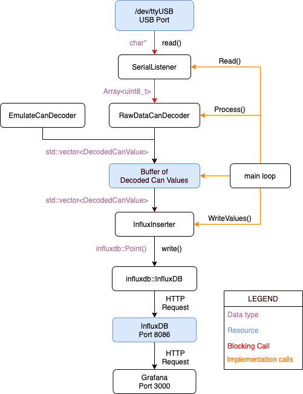

This repository contains an updated version of the eclipse-telemetry-SW software.
The goals of this new version are : - Make developing telemetry software easier and more accessible - Better UI and Grafana backend for better visualization - C++ backend - Database driven approach for live data and storage
To achieve these, we use the following third-party tools:
Grafana for the GUIInfluxDB as a backend for GrafanaInfluxDB-cxx Backend provided by awegrzyn for writing data to the DBlibcurl as a way to send HTTP commands to InfluxDBOnce the Influx Database is running (either locally or not), writing can be achieved with the influxdb-cxx backend taken from awegrzyn. The backend can create timeseries (aka tables) and entries. However, it cannot create new databases or manage the databases.
To create new databases, or any other InfluxDB command really, libcurl is used to send HTTP commands. All the InfluxDB API can be accessed through HTTP posts.
Here is a high level flow chart of the Telemetry software:

Serial data is provided via USB from a Xbee modem receiving data frames from the vehicle.
Raw data first enters the application through the SerialListener class. For Unix like machines, this serial flow is accessed as a device living under /dev/ (for instance /dev/ttyUSB0) and initialized using the linux termios C library. The current configuration is set to 1 stop bit and 8 bits per word with parity disabled. It is also important to disable canonical reading. Canonical reading would not give correct results for carriage returns, breaks, etc.. which could be valid values in a CAN frame.
The reading is blocking and will halt the application (dataflow loop) until sufficient amount of bytes are received (currently set at 64 bytes)
The RawDataCanDecoder class decodes frame bytes into messages and signals. It is the second step in our flow diagram. Its only interface function is Process() which will call the SerialListener::Read() function. Again, this call is blocking and will halt execution until sufficient packets are received.
Every CAN frame follows a 15 byte format : [header:2] [id:4] [data:8] [crc:1] The decoder parses this serial information to extract indidividual frames of 15 bytes. The processing into messages and signals is also done by the decoder.
Messages are decoded into a struct format using a map generated at compile-time. Indexing is done with the ID of the message. This message struct contains information about the signals contained. Those signals are then processed individually using the byte offsets provided by the message decode struct.
The signal processing converts raw bytes into the appropriate type of data. Supported data types are : - Float - Unsigned int (8, 16 or 32 bits) - Signed int (8, 16 or 32 bits)
The telemetry software uses the third-party influxdb-cxx library. The interface is provided via a unique pointer to the implementation of the library.
The initialization is performed via a URL string to where the influx service is reachable in the following format : - “http://localhost:8086?db=db_name”
InfluxDB is a timeseries database. As such, entries are organized by the time of entry. Every timeseries are known as measurements. In our case, every signal is a measurement. Inside a measurement table you will find points (or entries) which are indexed by time of entry. You can find more on the InfluxDB documentation, but in short we write every signal as an individual measurement.
Every measurement (table) can have multiple fields associated (indexed), but we only use the “value” field for consistency. It is also possible to add tags and a custom timestamp to the query, but InfluxDB already uses the current time as default timestammp.
Note that having multiple thousands of measurement writes per second on the database can cause significant slowness. The influxdb-cxx supports batch sizes, for sending batches of entries at a time. The default batch size is currently at 50 points.
When the modem or vehicle is not accessible or for testing purposes, it is possible to use a emulated serial decoder for writing random values into the database. Enable with the -emulate command line argument.
To start using the Telemetry software, you will first need to install a few dependencies on your system.
On OSX
brew install grafanaOther systems - For other systems, follow the instructions on this page. Make sure to install the OSS release and not the Enterprise version ! Note that for Debian or Ubuntu like machines, you may have to add the Grafana repository to the search path of apt-get. The instructions on how to do so are shown in the link above.
On OSX - Assusimg Homebrew is installed, simply run the following :
brew install influxdbOn Linux - For any system but Windows, follow the instructions for your system on this page. Similarly, for Ubuntu or Debian machines, you may have to first add the InfluxData repository to the search path of apt-get.
Once downloaded, you will need to start the Grafana and InfluxDB services.
On OSX - Run the lines (if Homebrew is installed) :
brew services start grafana
brew services start influxdbTo stop the services, run :
brew services stop grafana
brew services stop influxdbOn Ubuntu / Debian - Starting depends on whether or not your system uses systemd.
If your OS uses systemd
sudo systemctl unmask influxdb.service
sudo systemctl start influxdb
sudo systemctl start grafana-serversystemctl status command :sudo systemctl status influxdb
sudo systemctl status grafana-serverIf your system is NOT using systemd - Then starting with init.d will probably work. Run the following lines :
sudo service grafana-server start
sudo service influxdb startstatus option :sudo service grafana-server status
sudo service indluxdb statusJasmin, j’ai besoin de ton cours ;(
To do so, you will first need to build the application. The steps are presented in the next section.
The build uses CMake to package the dependencies and the commands. First, install the dev dependencies listed below:
CMakeOn Linux
$ sudo apt-get install cmakeOn OSX - Using Homebrew:
$ brew install cmakeOn Windows - Go to install CMake and follow the instructions
libcurl development filesOn Linux (Ubuntu)
$ sudo apt-get update
$ sudo apt-get install -y libcurl4-openssl-devOn OSX
Assuming homebrew is installed, simply run the following line:
brew install curlOn Windows
TODO: Windows needs to be done / tested
InfluxDB-cxxThe library must be built from source in all cases.
On Unix and OSX
On Windows
TODO : Give installation instructions for Windows
For Unix systems Navigate to the root folder of the project and run the following lines:
cmake .
makeThat’s it ! An executable eclipse_telemetry will have been built. To run it natively, follow the steps in the next section.
For Windows - The application can be built but cannot run on Windows at the moment
Once the application has been built using Cmake, you can start the application with the following command. Make sure that you pass command line arguments to the executable. At the moment, default execution assumes a Docker container. You will need to change the hostname to localhost and the TTY serial device to the one listed in /dev/. For testing purposes, you can also use the flag -emulate if no serial is present.
Do not add /dev/ in front of your TTY. The application already looks inside the /dev/ folder.
./eclipse_telemetry -hostname localhost -tty <your_tty_device>The telemetry software reads a serial data stream from a Xbee modem and decodes the raw bytes into usable information then pushed into an InfluxDB database. This live database can then be read by Grafana.
The application and InfluxDB parameters can be passed in via command line arguments : - [-emulate
By default, ‘ttyS0’ is used as serial device input. Default hostname is ‘influxdb’ and default database name is ‘eclipse_db1’
For contributing, simply clone this repo and submit pull requests whenever you feel you added something to the software ! Have fun :)
TODOTODO